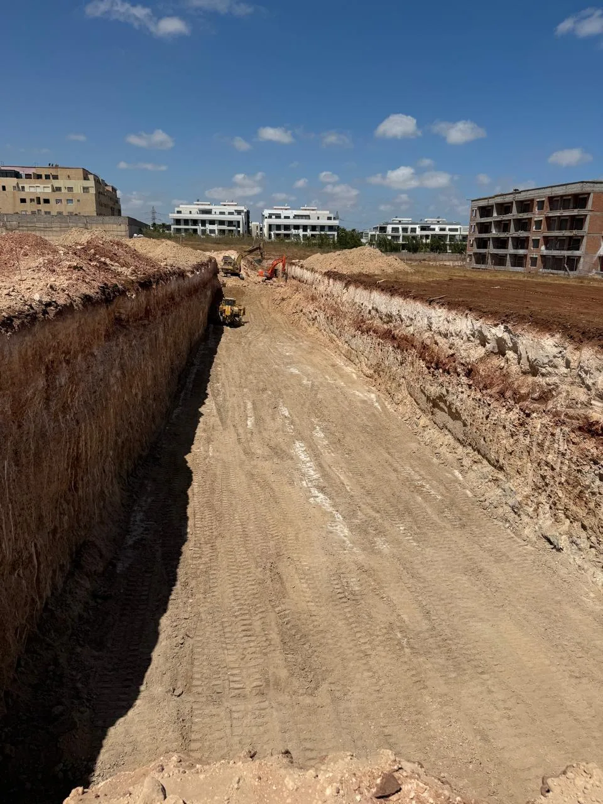

Location Engins BTP Maroc — Pelles, Camions & Compacteurs
Pelles mécaniques, camions bennes, compacteurs, niveleuses et dumpers disponibles à la location pour vos chantiers BTP à Casablanca et dans tout le Maroc. Conducteurs qualifiés inclus, tarifs compétitifs.

Vos engins de chantier disponibles rapidement
WAHID EASY TRAVAUX met à votre disposition une flotte d'engins BTP moderne et bien entretenue pour tous vos chantiers à Casablanca et dans tout le Maroc. Nos engins sont proposés avec conducteur qualifié et expérimenté ou en location sèche selon vos besoins.
Que vous ayez besoin d'une pelle mécanique pour quelques heures ou d'un parc complet d'engins pour plusieurs mois, WAHID EASY TRAVAUX s'adapte à vos exigences avec réactivité et professionnalisme.
Engins BTP disponibles à la location au Maroc
WAHID EASY TRAVAUX dispose d'une flotte d'engins BTP variée pour répondre à tous les besoins de vos chantiers de terrassement, VRD, assainissement et construction au Maroc. Tous nos engins sont régulièrement entretenus et conformes aux normes de sécurité en vigueur.
Pelles mécaniques à louer à Casablanca
Pelles hydrauliques sur chenilles
Nos pelles hydrauliques sont disponibles en différentes capacités pour s'adapter à chaque type de chantier :
- Mini-pelle 1,5T à 5T — zones d'accès difficile, intérieur bâtiment
- Pelle 13T à 20T — terrassement standard, tranchées VRD
- Pelle 25T à 35T — grands terrassements, carrières
- Pelle avec brise-roche hydraulique — démolition et roche
- Pelle avec grappin — tri de gravats et démolition
Camions bennes et transport
Pour l'évacuation des terres et le transport de matériaux sur vos chantiers BTP au Maroc :
- Camions bennes 10T à 30T — évacuation terres et gravats
- Semi-remorques bennes — grands volumes de transport
- Camions ampliroll — containers et bennes amovibles
- Dumpers articulés 25T — transport interne sur chantier
- Camions plateau — transport d'engins et matériaux lourds
Compacteurs et matériel de damage
Pour la compaction des remblais et la préparation des assises de chaussée :
- Rouleaux vibrants monocylindre 8T à 15T
- Rouleaux pieds de mouton — compactage argiles
- Plaques vibrantes — compactage zones restreintes
- Compacteur tandem — finition enrobés bitumineux
Engins de nivellement
- Bulldozers D6 à D8 — décapage et poussée de terres
- Niveleuses — réglage fin de plateformes
- Chargeuses sur pneus — chargement et manutention
- Télescopiques — manutention en hauteur
Conditions de location d'engins BTP au Maroc
Location avec conducteur
La majorité de nos engins sont proposés en location avec conducteur qualifié. Nos conducteurs sont des professionnels expérimentés, titulaires de leurs CACES et permis correspondants, formés aux protocoles de sécurité sur chantier.
Location sèche
La location sèche (sans conducteur) est possible pour les entreprises disposant de conducteurs qualifiés en interne. Elle est soumise à vérification des habilitations du conducteur désigné.
Tarification
- Tarification à l'heure, à la journée ou au mois
- Prix dégressifs pour les longues durées de location
- Frais de transport inclus dans certaines zones de Casablanca
- Assurance et entretien pris en charge par WAHID EASY TRAVAUX
Pourquoi louer vos engins chez WAHID EASY TRAVAUX ?
Engins modernes
Flotte récente et régulièrement entretenue. Engins fiables pour éviter tout arrêt de chantier.
Disponibilité 6j/7
Engins disponibles du lundi au samedi. Intervention d'urgence possible le dimanche sur demande.
Conducteurs qualifiés
Conducteurs certifiés, expérimentés et formés aux protocoles de sécurité sur chantier BTP.
Tarifs compétitifs
Prix horaires et journaliers parmi les plus compétitifs du marché BTP marocain. Dégressif longue durée.
Entretien inclus
Entretien préventif et curatif pris en charge. En cas de panne, remplacement de l'engin sous 24h.
Livraison sur site
Transport et livraison des engins directement sur votre chantier à Casablanca et dans tout le Maroc.
Location d'engins BTP en 4 étapes simples
Demande de devis
Contactez-nous par WhatsApp ou téléphone avec le type d'engin, la durée et la localisation du chantier.
Confirmation
Nous vérifions la disponibilité et vous confirmons le tarif et la date de mise à disposition sous 2h.
Livraison
L'engin est livré sur votre chantier à l'heure convenue avec son conducteur qualifié.
Suivi & retour
Suivi quotidien de l'engin, rapport d'heures et reprise de l'engin à la fin de la location.
Location engins BTP dans tout le Maroc
Nos engins BTP sont livrés sur vos chantiers dans toutes les régions du Maroc, avec une intervention prioritaire dans le Grand Casablanca.
FAQ — Location Engins BTP Maroc
Le tarif de location d'une pelle mécanique à Casablanca varie selon la capacité de l'engin (mini-pelle ou grande pelle), la durée de location et les options (avec ou sans conducteur). Contactez-nous via WhatsApp pour obtenir un tarif précis et compétitif selon vos besoins.
En général, le carburant est à la charge du locataire. Cependant, des formules tout compris (carburant, entretien, conducteur) sont disponibles pour les locations longue durée. Précisez vos besoins lors de la demande de devis pour que nous vous proposions la formule la plus adaptée.
La durée minimale de location est généralement d'une demi-journée (4h) pour les petits engins et d'une journée complète pour les grandes pelles et camions. Pour les projets importants, nous proposons des contrats hebdomadaires et mensuels avec des tarifs dégressifs.
Oui, WAHID EASY TRAVAUX livre ses engins BTP dans tout le Maroc. Des frais de transport s'appliquent selon la distance. Pour Rabat, Marrakech, Tanger ou Agadir, contactez-nous pour un devis de transport incluant le transfert de l'engin sur votre site.